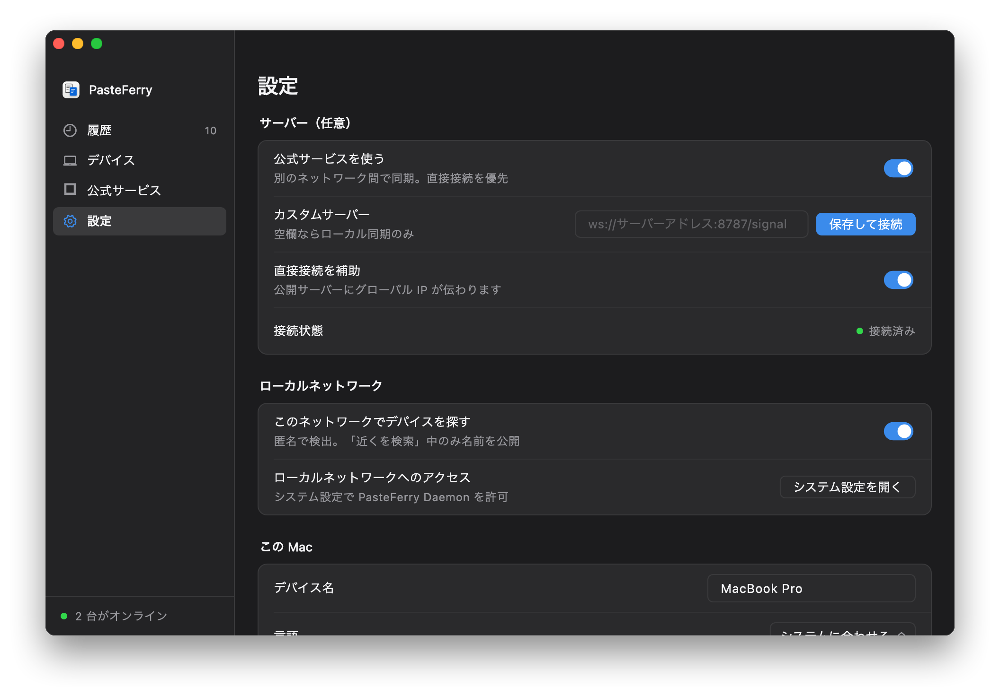
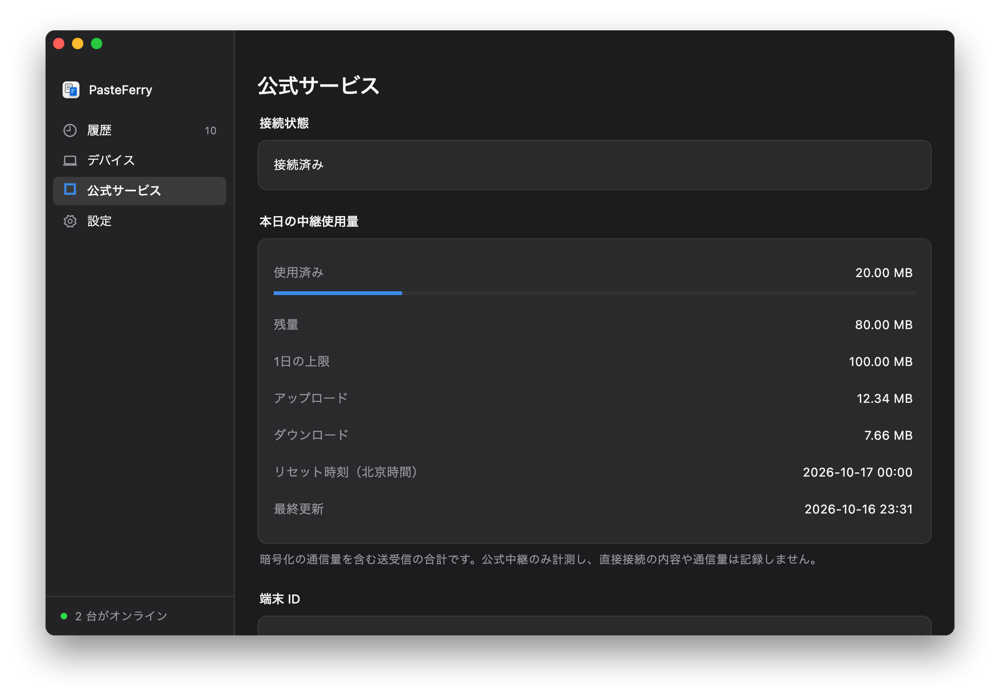

PasteFerry / 公式サービス
別ネットワーク間、構築不要
各パソコンに 2.1.0 以降を入れ、設定で公式サービスを有効にしてペアリングします。シグナリングが端末を引き合わせ、内容はまず直接送信。直接接続に失敗した場合のみ暗号化中継を使います。
最新版をダウンロード3 ステップでネットワークを越えて同期
- 同期する各パソコンに最新版を入れ、バックグラウンド同期を有効にします。
- 各パソコンで「設定 → 公式サービスを使う」をオンにし、必要なデータの説明を確認します。公式のホスト名やポートの入力は不要です。
- 一方でコードを表示し、もう一方で入力。両画面の指紋を照合して確認します。既存のペアリングはそのまま使えます。

直接接続を先に、中継は必要なときだけ
公式シグナリングはオンライン端末間の接続情報を交換します。まず STUN と NAT トラバーサルを試し、その試行に失敗した場合のみ中継を申請します。内容は常にエンドツーエンド暗号化されます。
直接通信は中継残量を消費しません
現在の標準中継上限は端末の上限グループごとに送受信合計 100 MB/日で、北京時間午前 0 時にリセットします。再インストールで新たな残量が得られる保証はありません。使用量画面に実際の上限、残量、更新時刻を表示します。上限に達しても直接接続は利用できます。上限と提供状況は変更される場合があるため、アプリでご確認ください。
有効にするかは自分で選べます
新規インストールではオフです。有効にした場合のみ必要な接続統計を記録し、中継申請時にのみ専用の端末ダイジェストを導出します。実際の端末名、元のシステム識別子、コピー内容を統計として送信しません。項目と保持期間はプライバシー説明をご覧ください。
独自サーバーも引き続き利用可能
LAN、独自サーバー、Tailscale は公式ゲートウェイから独立して動作します。容量を自分で管理したい場合はサーバーを構築し、独自アドレスの横にある「保存して接続」を使えます。
